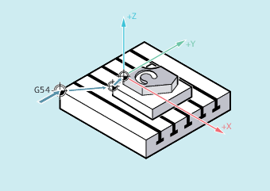

A frame can be assigned to another frame or frames can be chained to each other in the NC program.
Frame chainings are suitable for the description of several workpieces, arranged on a pallet, which are to be machined in the same process.
The frame components can only contain intermediate values for the description of pallet tasks. These are chained to generate various workpiece zeroes.
| Program code | Comment |
|---|---|
| DEF FRAME SETTING_1 | ; Definition of a local frame variable |
| SETTING_1 = CTRANS(X,10) | ; Assignment of the function result to the frame variable |
| $P_PFRAME = SETTING_1 | ; Assignment of the frame variable to the current frame |
| DEF FRAME SETTING_4 | ; Definition of a local frame variable |
| SETTING_4 = $P_PFRAME | ; Buffer the current frame in the frame variable |
| ... | |
| $P_PFRAME = SETTING_4 | ; Fetch the current frame from the frame variable |
The operator : chains frames with each other in the programmed sequence. The frame components, such as offsets and rotations, are executed successively additive.
| Program code | Comment |
|---|---|
| $P_IFRAME = $P_UIFR[15] : $P_UIFR[16] | ; Assignment of the result frame from the chaining of the ; two settable data storage frames on the active; settable total frame.; Application example:; $P_UIFR[15]: Offset; $P_UIFR[16]: Rotation |
| $P_UIFR[3] = $P_UIFR[4] : $P_UIFR[5] | ; Assignment of the result frame from the chaining of the ; two settable data storage frames on a ; different settable data storage frame |
See also:
Assigning direct values (axis value, angle, scale)
Reading and changing frame components (TR, FI, RT, SC, MI)
Definition of frame variables (DEF FRAME)